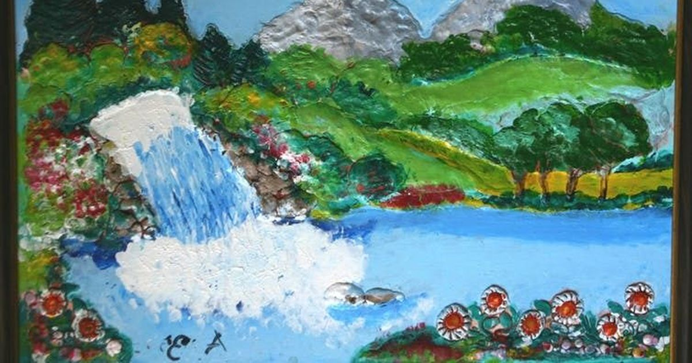
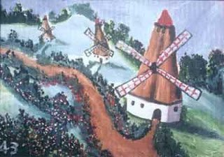
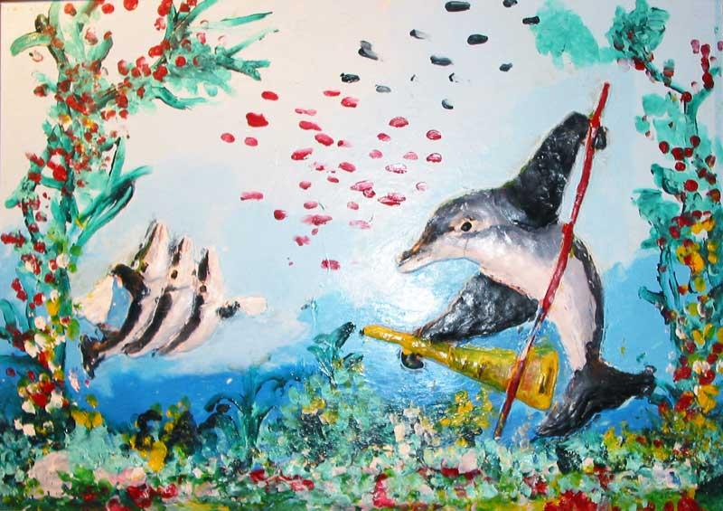

Eşref Armağan (born 1953) - Turkish blind painter
Armağan was born with virtually no visual input, yet taught himself painting by touch and intuition.
His brain's “visual cortex” has been shown in research to activate for touch and spatial reasoning rather than sight—challenging assumptions about what “seeing” means.
